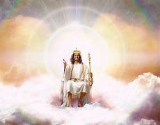
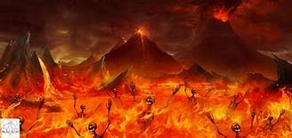

| Jesús Rey Milenario |
Vendrá con gran poder para reinar y juzgar a todos. Apocalipsis 20:11 "Y vi un gran trono blanco y
al que estaba sentado en él, de delante del cual huyeron la tierra y el cielo, y ningún lugar se
encontró para ellos" |
 |
| Lago de fuego |
Apocalipsis 20:14-15 "La muerte y el infierno fueron arrojados al lago de fuego. Este lago de fuego
es la muerte segunda. Aquel cuyo nombre no estaba escrito en el libro de la vida era arrojado al
lago de fuego. |
 |
| Satanás, serpiente antigúa |
Es vencido, inicialmente es encadenado por mil años, luego es liberado para que tiente a los que no
estan deacuerdo con el reinado de Jesús pero luego sea lanzado será arrojado al lago de fuego y
azufre |
|